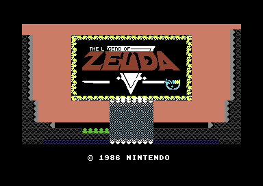
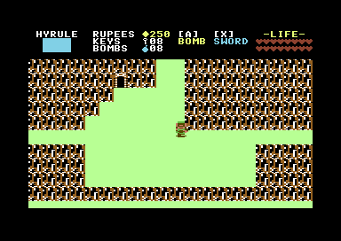
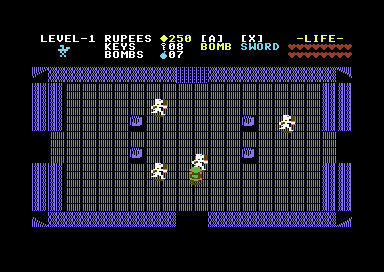
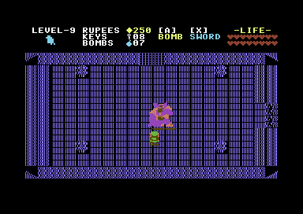

 📜 1. Thème d'Introduction & Titre Fanfare d'ouverture, cascade animée et Légende d'Hyrule en stéréo Dual SID.
 🛡️ 2. Thème Overworld (Aventure) Boucle complète Parties 1 & 2 avec chœur stéréo SID2 et basse bondissante sur Voix 3.
 🗝️ 3. Thème des Donjons (Underworld D1–D8) Arpèges Pulse 50 % spatialisés entre SID1/SID2 et basse sourde souterraine.
 🔥 4. Thème du Donjon 9 — Death Mountain Thème étendu 124 pas streamé depuis la Banque Cartouche 31 pour la forteresse de Ganon.